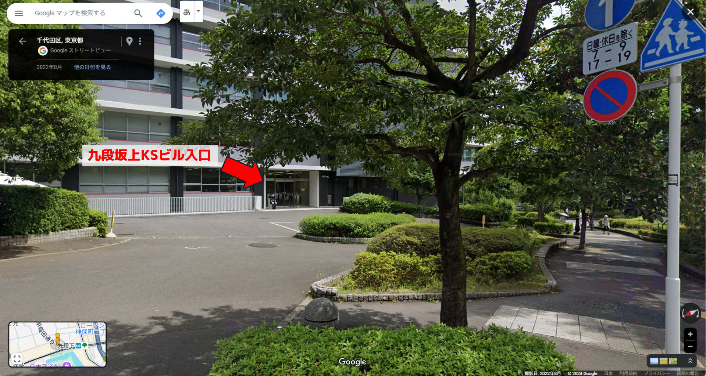

![[PS]](https://prosym.org/assets/images/prosym2_white.svg)
夏のプログラミング・シンポジウム 2024 参加者向けページです。
今回オンライン含めて約50名の方の参加申し込みがありました。
現地参加の方が28名（うち4名が遅れて参加）となっております。
必要な事項は随時追記していますので、ご一読ください。
日程・会場
参加者の方へご案内
ビルの入館について
- 当日 10:00-10:30 の間に九段坂上KSビル入口（写真1）から入館ください。
- スタッフが待機していますので、お名前を告げて入館証をお受け取り下さい。
- 入って右手すぐにエレベーターがありますので7Fにお上がりください。
- 遅れて到着して入口にスタッフがいない場合は、Slackでご連絡ください。
- 入館証は必ずご返却ください。

写真1：九段坂上KSビル入口
写真1：九段坂上KSビル入口
Slackについて
メールでお送りしている招待リンクより #sprosym2024 にご参加ください。
招待リンクが届いていない方は問い合わせにご連絡ください。
招待リンクが届いていない方は問い合わせにご連絡ください。
Zoomについて
オンライン参加の方は以下からご参加ください。
トピック: 夏のプログラミング・シンポジウム 2024 時刻: 2024年9月21日 10:30 AM 大阪、札幌、東京 参加 Zoom ミーティング https://us02web.zoom.us/j/85310940053?pwd=AY8R1AepzUWAiHw6Z5t5K5XuB0go0g.1 ミーティング ID: 853 1094 0053 パスコード: 694735
プログラム
最新のタイムテーブル（プログラム）をご参照ください。
幹事
ご不明な点がございましたら、幹事まで遠慮なくご質問ください。
- 竹迫 良範（リクルート）
- 中山 心太（NextInt）
- 荒川 淳平（IzumoBASE）
- 竹内 郁雄（未踏）
- 大日向 大地（富士通）
問い合わせ
- sprosym2024 {at} ipsj.or.jp